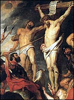
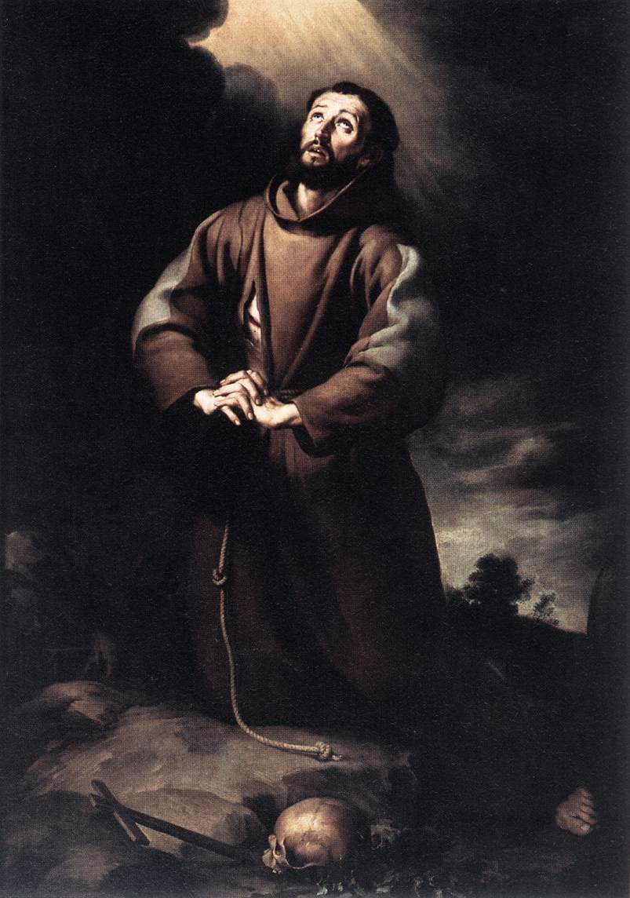

Em Fátima NOSSA SENHORA recomendou que na “adoração espiritual” a humanidade deve se entregar totalmente a DEUS. Porque nesta oferta interior consiste o “sacrifício espiritual” que terá tanto mais valor e será tão mais agradável ao CRIADOR, quanto maior for o empenho, a dedicação e a disponibilidade de quem o realiza, considerando que este ato de amor irá tornar o fiel participante da Paixão Redentora de CRISTO.
O pecado é o abandono de DEUS e, por isso, é a perversão das criaturas em cujo íntimo se encontra gravado o “Nome do SENHOR”. Assim sendo, antes de ser considerado como uma violação da lei moral ou de uma ofensa contra uma criatura, o pecado é fundamentalmente uma blasfêmia contra o “Nome de DEUS”. Por isso também a “reparação” ou a “anulação do pecado”, antes de ser um “ato reparador da ordem criada” é, sobretudo, a “exaltação”, a "santificação" e a “glorificação” do “Nome do CRIADOR”.

Por isso mesmo, a “purificação do pecado” e a “reparação” em si, é o reconhecimento real de DEUS, é a realização viva da verdade de que o fiel pertence total e incondicionalmente ao CRIADOR. Assim sendo, a “reparação” feita através da “adoração”, tem uma força muito mais evidente, porque é uma oferta direta a DEUS, representando uma entrega total da criatura ao SENHOR, na espontaneidade de um gesto nascido ternamente no interior do coração humano. Só assim, o pecado será destruído e serão abolidos e aniquilados todos os seus baluartes, deixando pura e sem mácula, a alma do fiel.
Isto significa afirmar que entregar-se a DEUS na “adoração”, para a maior “glorificação” e “santificação” de seu “Santo Nome” é o ato primeiro e fundamental contra o pecado. Sem este fundamento, os outros “exercícios espirituais” e as “práticas humanas” executados isoladamente, como as devoções, boas obras, sacrifícios, orações, cultivo das virtudes, consagração, etc. atuam como “forças auxiliares” porque sozinhos não conseguem “purificar completamente” e nem “reparar todos os pecados” . Permanece a raiz da transgressão na autonomia da mentira proveniente do “eu” ou seja, "do livre arbítrio" da criatura. Isto porque, no ato da pessoa entregar-se totalmente a DEUS na “adoração” é abolida integralmente a autonomia humana. Desse modo, as “práticas espirituais” realizadas com a intenção de “agradar”, “santificar” e “adorar” a DEUS, alcançarão o seu objetivo e ensejarão ao fiel os preciosos beneficios e à graça da Salvação Eterna.
Por todas estas razões, NOSSA SENHORA em Fátima pediu a humanidade com insistência, o cumprimento da exigência central da Sagrada Escritura: a “Santificação do Nome de DEUS”."EU SOU o vosso DEUS. Fostes santificados e vos tornastes santos, pois que EU SOU Santo.". (Lv 11, 44) E também: Sede santos, porque EU, vosso DEUS, sou Santo".(Lv 19, 2)

É o reinado do ESPÍRITO DE CRISTO no meio da humanidade.
Esta realidade nos traz presente, que apesar das fraquezas e limitações das criaturas a eficácia da salvação será possível, se o fiel abrir o coração a DEUS, em JESUS CRISTO, de forma completa e definitiva. E a eficácia desta ação será tanto mais poderosa e influente, quanto mais perfeito se realizar na criatura o Mistério do SENHOR, porque assim a pessoa será envolvida, penetrada e dominada pelo ESPÍRITO SANTO que nela instalará a sua morada e atuará livremente no “espaço fértil” e “fecundo” de sua alma, derramando uma imensidão de benefícios.
Isto significa dizer, que a “adoração reparadora” convida o próprio DEUS a estar presente na vida da criatura, habitando em sua existência, convertendo o coração, iluminando as decisões, dando-lhe discernimento, sabedoria, fortaleza, segurança nas realizações, fidelidade, justiça em seus atos, auxílio nas adversidades, proteção contra os males, infundindo-lhe à grandeza de um amor sem limites, uma prodigiosa paz e lhe propiciando a salvação eterna.